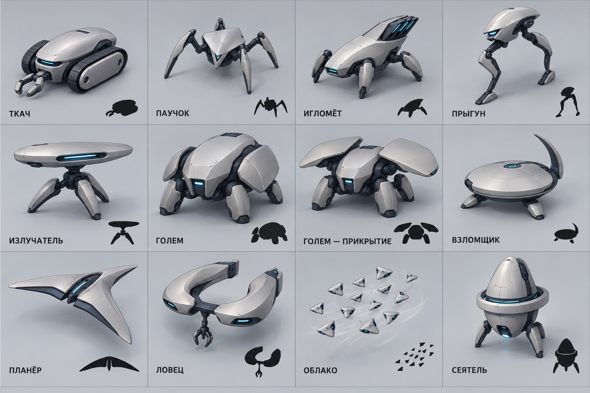
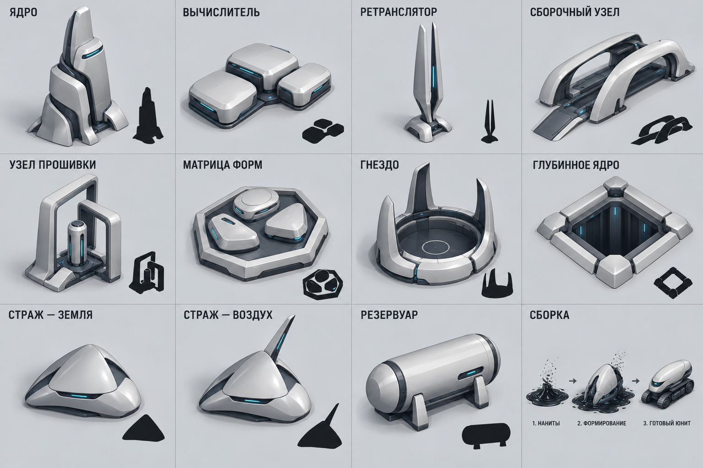

Резонанс · плавная высокотехнологичная робототехника
Новая итерация для обсуждения: крупные чистые формы, скрытые механизмы, минимум деталей. Готовые машины твёрдые; нанитная жидкость — процесс сборки. Старые промышленные и жидкие версии больше не задают направление.
Принципы и ограничения · ПромптыВсе юниты и раскрытие голема

Все здания и принцип сборки
